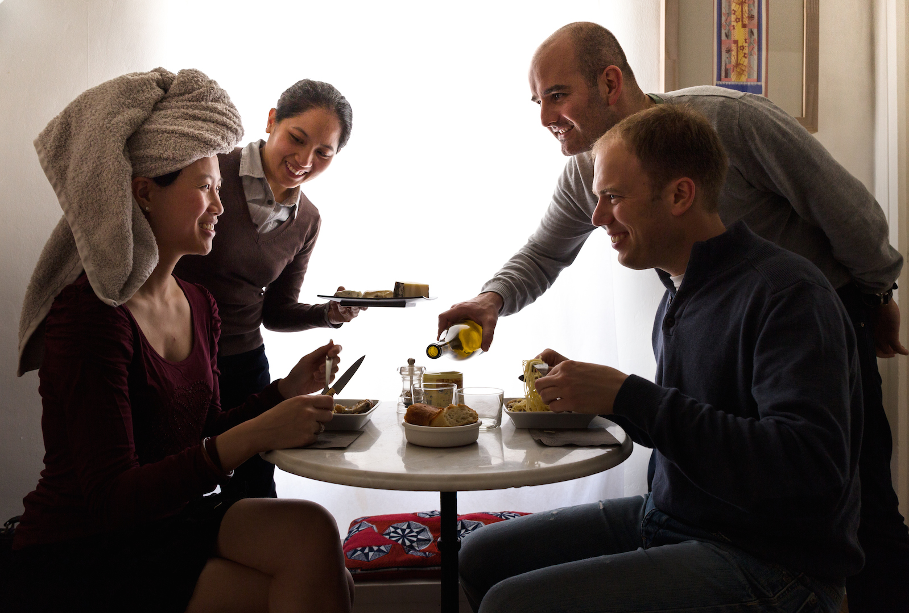

Test sur les dates
hhdqshGKMHGDSKHJKFDSGGQSDDSGF

Lire plushhdqshGKMHGDSKHJKFDSGGQSDDSGF

Lire plusPour la première fois, le plus grand festival de danse japonnais, l'Awa Odori, sort de ses frontières pour se produire en France. Cette première édition, l'Awa Odori Paris 2015, a regroupé de nombreux danseurs et musiciens venus du Japon sur la place des Vosges à Paris ce vendredi 2 octobre 2015.
Au Japon, le festival réunit chaque année au mois d'août rien que dans la ville de Tokushima près de 70 000 danseurs et près de 2 millions de spectateurs venus de tout le pays.
La version française, bien plus modeste, a permis de faire découvrir cette tradition datant du XVIème siècle à un public parisien venu nombreux.


Pour tout savoir sur ce festival et son origine : Awa Odori Paris
Lire plus